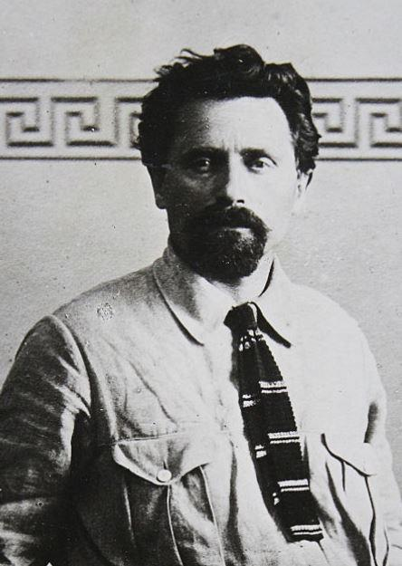

Les philosophes ont toujours cherché à savoir si la guerre est consubstantielle à la nature humaine, c’est-à-dire si l’homme choisit la guerre ou bien si elle est inscrite dans ses gènes, sa culture, sa raison…
Si pour Diderot, la guerre est « une maladie convulsive et violente du corps politique » Cicéron affirme, dans son « Traité des devoirs », qu’il « … ne fais point la guerre en marchand, mais en soldat » sans oublier Clausewitz. Il n’est pas de mon propos d’apporter ma part de réflexion sur ce qu’est la guerre mais d’évoquer le mouvement syndical et la guerre, et plus particulièrement comment la CGT (syndicat majoritaire en France) conçoit son rôle en temps de guerre.
Après un rapide survol de l’histoire, trop rapide penseront certains, du mouvement syndical, j’essaierai de montrer que si pour les Etats « La guerre est la continuation de la politique par d’autres moyens » (Clausewitz, De la Guerre), pour la CGT elle est, en paraphrasant Clausewitz, un acte de violence dont l’objectif est de contraindre l’adversaire à exécuter sa volonté. Sauf que l’adversaire reste l’ennemi de classe.
Diderot (1713-1784)
Clausewitz (1780-1831)
Le mouvement syndical n’est pas né avec la Révolution industrielle mais remonte à la première fois où un homme a travaillé pour un autre. Ainsi la première grève, recensée par les archéologues, date de l’antiquité en Égypte, sous le règne de Ramsès III, parmi les constructeurs des pyramides. Selon le scribe Amennakht, qui appartenait à l'équipe des travailleurs de la tombe de Ramsès III, un conflit se manifesta et crût, passant des plaintes initiales aux réclamations les plus véhémentes :
« An 29, deuxième mois de l’hiver, jour 10. En ce jour l’équipe a passa les cinq postes de contrôle de la nécropole en disant : "Nous avons faim ! 18 jours sont déjà passés dans ce mois", et les hommes allèrent s’asseoir à l’arrière du temple funéraire de Menkheperre (Thoutmosis III).
(…) Si nous en sommes arrivés à ce point, c'est à cause de la faim et de la soif ; il n'y a plus de vêtements, ni d'onguents, ni de poissons, ni de légumes ; écrivez au pharaon, notre bon seigneur, à ce propos, et écrivez au vizir, notre supérieur, pour que les provisions nous soient données ! ».
Avant la Révolution française, le régime du travail repose sur les corporations qui rassemblent de façon obligatoire dans cette même organisation les maîtres et les compagnons. Petit à petit, l’accès à la maîtrise se fermant et les conditions de la vie ouvrière devenant plus pénibles, il y a formation de confréries de compagnons, confréries qui perdurent aujourd’hui. Avec la Révolution française c’est un grand principe qui est adopté, le libéralisme économique. En effet, le principe de la liberté au travail souhaité par la bourgeoisie commerçante conduit à interdire tout ce qui pourrait gêner le jeu du marché du travail et du commerce : la loi d’Allarde du 2 Mars 1791 supprime les corporations.
La loi Le Chapelier du 14 juin 1791 interdit les syndicats ou toute forme d’association ouvrière de ce type. C’est le contrat individuel reposant sur la volonté libre des deux intéressés, en l’occurrence le patron et l’ouvrier, qui prévaut. Entre deux libertés, elles choisissent la liberté du travail contre la liberté d’association. Comme quoi la loi El Khomri a des racines anciennes…
Après une période de mise en forme, de précisions et d’aménagement de ce principe, un mouvement syndical structuré commence à émerger avec la Révolution industrielle et l’arrivée d’une classe ouvrière.
Après les émeutes de Février 1848, le gouvernement provisoire qui se met en place à l'issue du 24 Février, cède à la principale revendication ouvrière : celle du droit au travail. En effet, son secrétaire, Louis Blanc, autorise l'ouverture d'un programme d'ateliers nationaux afin de calmer l'agitation ouvrière et de permettre de résoudre la question sociale à court terme. Sous la pression du peuple qui occupe encore l'Hôtel de ville, Blanc rédige un décret publié le 25 février : « Le Gouvernement provisoire de la République Française s'engage à garantir l'existence de l'ouvrier par le travail, il s'engage à garantir du travail à tous les citoyens-, il reconnaît que les ouvriers doivent s'associer entre eux pour jouir du bénéfice légitime de leur travail... »
La période du Second Empire, qui s’ouvre en 1852, se caractérise par le développement rapide du chemin de fer qui va profiter aux secteurs de la sidérurgie et de la construction mécanique lourde : modernisation et concentration (Wendel, Schneider, création du Comité des forges en 1864, qui se transformera en UIMM (Union des Industries et des Métiers de la Mécanique). D’ailleurs, ce sont les années 1850-1880 qui marquent l’arrivée massive de populations immigrées ouvrières, conséquence de la dépression démographique française. Anglais, Belges, Italiens, Polonais, Espagnols, Kabyles sont les premiers non nationaux à se fondre dans la classe ouvrière de France.
Et c’est en 1895, à Limoges, que la Confédération générale du travail (CGT) est créée. C’est à la même période que naissent les principaux syndicats mondiaux. Toutefois, il faut noter que le mouvement syndical était, avant la Première Guerre mondiale, circonscrit géographiquement, à l’Europe et aux pays anglo-saxons (Royaume-Uni, Etats-Unis, Canada et Afrique du Sud).
En 1914, sous l’influence de Léon Jouhaud, l’attitude de la CGT va basculer en quelques semaines. Antimilitariste, elle va devenir patriote et belliciste, et va même, encourager l’effort de guerre. L’Union sacrée se met en place pour la « Revanche ». Seule une minorité rassemblée autour de la Fédération des Métaux et du groupe de « La vie ouvrière » soutient une ligne pacifiste et antimilitariste.
Dans « Les ouvriers, la patrie et la révolution : Paris 1914-1919 », Jean-Louis Robert raconte que l’un des grands mythes de la Grande Guerre, celui des Terrassiers venus dans un grand élan patriotique dans le camp retranché de Paris pour participer aux travaux, est faux et, même, que les Terrassiers en avaient profité pour demander des payes conséquentes pour aménager les lieux sous peine de grève. Le gouvernement céda et donna, en plus, le monopole de l’embauche au Syndicat des Terrassiers…
Malgré la chute des effectifs, en 1915, la CGT maintient l’Union sacrée jusqu’en 1917. Cette année-là on compte 696 grèves et 293.810 grévistes en France. Pourtant, le ministre de l’Armement, Albert Thomas, avait été conciliant avec les syndicats en prenant des mesures en faveur des ouvriers de l’armement : fixation de minima et de barèmes pour les salaires dans les usines d’armement, mise en place de commissions mixtes paritaires dans les départements et introduction des délégués d’atelier.
Les 6 et 7 novembre 1917, c’est la rupture de l’Union sacrée. Au même moment éclate la Révolution d’Octobre en Russie. Dans les heures qui suivent le déclenchement de la révolution, Lénine fait approuver le fameux Décret sur la paix. Il annonce l’abolition de la diplomatie secrète et la proposition, à tous les pays en guerre, d’entamer des pourparlers « en vue d’une paix équitable et démocratique, immédiate, sans annexions et sans indemnités ». Seule l’Allemagne accepte.
En 1926, dans une conférence, le chef de l’Internationale Syndicale Rouge, Solomon Abramovitch Losovski indiquait que ce qui différencie le syndicalisme anglo-saxon de celui tel qu’il est pratiqué en France est que l’un se préoccupe des intérêts étroitement corporatifs, des intérêts de telle ou telle catégorie du travail alors que l’autre, qu’il qualifie d’anarcho-syndicalisme, envisage des intérêts généraux de la classe ouvrière et donc qu’il n’envisage pas une amélioration du système capitaliste, mais la destruction de ce système contrairement au « trade-unioniste ». Losovski révèle, au cours de cette conférence, que les grèves menées par les syndicats français sont sous-tendues par l’idée de sabotage ou de terreur économique en tant que moyen d’action sur les entrepreneurs ce qui éclaire, sous un autre jour, les grèves de 1917 et, dans une certaine mesure, les mutineries dans l’armée.
Pour Losovski, la guerre qui a été « […] provoquée par les antagonismes impérialistes avait pour but fondamental non seulement de supprimer la concurrence allemande, mais aussi de tuer la possibilité même d’une révolution. » justifiait une union internationale des ouvriers et un rejet de tout patriotisme notamment parce que « des syndiqués étaient envoyés au front pour mitrailler leurs camarades ». Il y voyait, également, une lutte entre les syndicats de l’Entente et les syndicats des Empires Centraux pour des intérêts purement capitaliste, ce qui était, pour lui, impensable.
Après la chute du Tsar, les Allemands signent le Traité de Brest-Litovsk avec les Russes. Traité « voulu par les masses » qui selon Lénine, « ont voté avec leurs pieds, parce qu’ils se sauvent des tranchées… » justifiant, ainsi, l’obligation de création d’une Internationale ouvrière seule à même de stopper, voire de prévenir, toute guerre…
Les négociateurs du Traité de Versailles avaient, d’ailleurs, pris en compte cette donnée puisque des responsables syndicaux comme Samuel Gompers, Léon Jouhaux ou encore William Archibald Appleton participèrent aux discussions qui conduisirent à la rédaction du Chapitre XIII qui commence par cette affirmation : « Attendu qu'il existe des conditions de travail impliquant pour un grand nombre de personnes l'injustice, la misère et les privations, ce qui engendre un tel mécontentement que la paix et l'harmonie universelles sont mises en danger, et attendu qu'il est urgent d'améliorer ces conditions : par exemple, en ce qui concerne la réglementation des heures de travail, la fixation d'une durée maxima de la journée et de la semaine de travail, le recrutement de la main-d’œuvre, la lutte contre le chômage, la garantie d'un salaire assurant des conditions d'existence convenables, la protection des travailleurs contre les maladies générales ou professionnelles et les accidents résultant du travail, la protection des enfants, des adolescents et des femmes, les pensions de vieillesse et d'invalidité, la défense des intérêts des travailleurs occupés à l'étranger, l'affirmation du principe de la liberté syndicale, l'organisation de l'enseignement professionnel et technique et autres mesures analogues »
Le Traité institua une Organisation Internationale du Travail qui se réunit pour sa première Conférence internationale du Travail à Washington en octobre 1919.
Elle adopta les six premières conventions internationales du travail, qui portent respec-tivement sur la durée du travail dans l’industrie, le chômage, la protection de la maternité, le travail de nuit des femmes, l’âge minimum et le travail de nuit des jeunes dans l’industrie.
L’entre-deux guerre est marquée par un retour du Pacifisme dans la société, pacifisme qui se renforce dans le mouvement syndical même si la scission de la CGT se concrétise entre les tenants du communisme et les Réformistes que l’on a vu à l’œuvre lors des négociations du Traité de Versailles. En même temps que la CGT voit une augmentation rapide de ses effectifs, qui passent de 1 200 000 en 1919 à 2 400 000 en 1920, elle subit de fortes divisions internes.
Pendant les grandes grèves de 1920, l’opposition entre réformistes et révolutionnaires ne cesse de croître. La scission intervient en 1921, un an après le congrès de Tours, qui avait concrétisé la division de la SFIO et abouti à la création du Parti communiste français. Les syndicats révolutionnaires, minoritaires, sont exclus de la Confédération, mais se rassemblent en 1922 pour constituer la Confédération générale du travail unitaire (CGTU), qui travaille alors en étroite collaboration avec le Parti communiste et rejoint l’Internationale syndicale rouge (ISR).
Parallèlement se développe un syndicalisme qui privilégie la collaboration des classes afin de redresser le pays. Sa principale action sera de développer une propagande contre les grèves de cette période qui sont condamnées comme étant des actions politiques qui visent à déstabiliser le pays.
L’un des exemples les plus marquant est les syndicats professionnels créés par le Parti Social Français du colonel de La Roque, dont le programme est « ... reconstitution de la famille, organisation des métiers et de la profession selon les principes coopérateurs, lutte contre la corruption, réforme « courageuse » du régime capitaliste, élaboration d'une charte du travail, adaptation du régime parlementaire. » Le PSF développera une politique sociale conséquente avec, notamment, l’organisation des colonies de vacance, des garderies, des syndicats par branche d’activité… Les syndicats du PSF seront, immédiatement, qualifiés de « Jaunes » par la CGT car ils étaient plus dans la lignée des Trade-Union évoqués plus haut. Un petit aparté sur le PSF qui, malgré la brièveté de son existence, s’est révélé un parti de masse à l’effectif supérieur à ceux des partis socialiste et communiste de l’époque.
Son histoire, son électorat, son programme n’est pas sans rappeler le FN actuel. Il faut lire « Le Parti social français dans le Nord (1936‑1945) » par Jean-Paul Thomas…
Le 18 septembre 1939, la CGT, qui s’est uni avec la CGTU, vote une déclaration excluant les militants qui refusent de condamner le pacte germano-soviétique soit les communistes de la CGT. Plus de 600 syndicats sont dissous et de nombreux militants et dirigeants exclus sont arrêtés. Ceux qui ne sont pas arrêtés, ni mobilisés, entrent dans la clandestinité. Il faudra attendre 1941, et l’Opération Barbarossa, pour que les Communistes se rangent du côté de la Résistance à l’occupant.
Le 12 décembre 1943, la CGT n’oublie pas que la lutte contre l’occupant ne doit pas faire oublier les revendications traditionnelles : « Vous avez encore à gagner la bataille pour vos salaires et des conditions de vie moins inhumaines. Pour cela, vous avez à entrer catégoriquement dans l'action. Les moyens d'obtenir satisfaction sont entre vos mains et dans votre volonté. Les grèves restent l'arme ultime à employer pour imposer votre dû.
Revendiquer un salaire meilleur est un devoir national. C'est sauvegarder les familles françaises » Cela dit l’appel à la grève générale d’août 1944 avait pour but de paralyser l’occupant.
L’après-guerre sera marqué par les guerres « coloniales ». La CGT va s’opposer à toutes ces guerres et se mobilise contre les politiques mises en œuvre par les différents gouvernements en cohérence avec ses combats antérieurs « au nom d’une solidarité sans faille avec les peuples en lutte, à leur indépendance et leur émancipation de la tutelle coloniale ». Des actes de sabotages, des refus de charger les bateaux en partance pour l’Indochine, etc. sont la concrétisation de cette stratégie.
« A mon arrivée en Indochine, en février 1953, mes camarades me mettent tout de suite au courant : il faut vérifier tout le matériel venant de France : des ouvriers politisés de nos usines d'armement ont pris l'habitude de saboter les armes et des munitions destinées aux combats contre des communistes, nos adversaires en Extrême-Orient. » (Sous-lieutenant Jacques Jauffret, « Crabes et Alligators dans les rizières ») Sans parler de l’Affaire du Dixmude…
L’Algérie reste un sujet très polémique mais le rôle de la CGT est bien documenté notamment dans un dossier publié par Mémoires Vives de l'Institut d'Histoire Sociale CGT d'Île de France et intitulé « La CGT dans la Guerre d'Algérie (1954-1962) »
De 1954 à 1956, la métropole considère cette guerre comme des « évènements ». La dénonciation du colonialisme français n'est le fait principalement que des directions de la CGT et du PCF comme de quelques chrétiens humanistes. Or, quand le socialiste Guy Mollet, le premier ministre de l'époque, envoie les appelés « pacifier l'Algérie » et rappelle des classes d'âge pour aller y combattre, l'opinion française commence à s'émouvoir. Elle se durcit avec l'arrivée des premiers cercueils des appelés tués au combat. Désormais, l'ensemble de la CGT s'engage pour « l’affirmation du droit des peuples et des travailleurs algériens à ses libertés, à sa patrie, à son indépendance ». L’action syndicale se résume à des grèves pour entraver les transports de troupes, de marchandises à destination de l’Algérie et, contrairement, à l’Indochine, il n’y a pas de témoignages fiables sur des sabotages éventuels.
De fait, la CGT agit non pas comme un syndicat de travailleurs mais avant tout comme un outil politique, se servant des travailleurs, visant à préserver la paix dans le monde en se fixant 3 objectifs :
1- la lutte contre la course aux armements en estimant que l’argent doit servir aux besoins de développement et de justice sociale ;
2- la résolution pacifique des conflits par la négociation.
3- la reconnaissance des droits souverains des peuples à disposer d’eux-mêmes comme le proclame la Charte des Nations Unies.
Pour illustrer cette stratégie, on peut mentionner la condamnation de la réquisition de navires civils à des fins militaires dans le cadre de l'opération Daguet, condamnation suivie de refus de charger ces navires. Mais lorsque la politique étrangère française coïncide avec ses objectifs, la CGT n’engage aucune action qui puisse entraver la bonne marche des opérations comme dans le cas de l’Ex-Yougoslavie : « Nous condamnons totalement le régime de Milosevic et sa politique de purification ethnique, insupportable et totalement contraire aux valeurs de la CGT. Le clivage ethnique est lourd de sens au niveau historique, lourd de danger pour la construction européenne, lourd de signification en France avec la présence du Front national. » (Alain Guinot, Secrétaire national).
Bien entendu, la CGT condamne toute alliance qui ne va pas dans le sens d’une union des travailleurs :
« La CGT condamne le retour de la France dans l’OTAN qui pour elle demeure un vestige de la guerre froide. La CGT revendique la dissolution de l’OTAN qui n’a plus de raison d’être depuis la chute du mur de Berlin et la dissolution du Pacte de Varsovie. » (Pour la paix, non à l’OTAN, le 16 mars 2009).
La politique pacifiste de la CGT reste constante comme le montre cet extrait d’un communiqué de la CGT du 6 décembre 2013 : « La France qui garde une forte influence en Afrique subsaharienne devrait au contraire encourager systématiquement toute initiative visant à consolider les transitions démocratiques au lieu de soutenir, souvent sans réserve, ses affidés, qu’ils soient au pouvoir ou dans l’opposition. A l’heure où se tient le "Sommet de l’Elysée pour la paix et la sécurité en Afrique", la CGT réaffirme au contraire son attachement à des logiques de paix, de solidarité et d’aide au développement pour l’Afrique. »
D’ailleurs, en novembre 2015, la CGT publie un communiqué dans lequel elle réaffirme ses valeurs de « paix et de fraternité » et, donc, son hostilité aux interventions militaires dans le cadre d’une alliance ou non :« La guerre ne règle rien, au contraire. Les lieux de tensions et conflits se multiplient avec leurs cortèges de morts, de destruction, de désolation et de haine. Les multiples interventions militaires (en Irak, en Lybie, en Syrie, etc.), loin d’instaurer la démocratie ont généré un appauvrissement des populations avec des centaines de milliers de victimes et une impasse économique et sociale. C’est le terreau sur lequel le terrorisme se développe, poussant des populations entières sur le chemin de l’exil ».
Il n’est pas question de nier tout patriotisme aux syndiqués même si, dans certains cas il a été difficile, pour eux, de choisir un camp. Souvenons-nous que, pour le syndicalisme français, la période de l'Occupation fut, à bien des égards, tout à fait exceptionnelle. Alors que certains militants participent directement au pouvoir, chez les anti-vichystes, la lutte revendicative traditionnelle se double d'un engagement contre Vichy et les Allemands, c'est-à-dire d'une fonction proprement politique.
Il faut conserver en mémoire que de nombreux militants et dirigeants de la CGT ont sacrifié leur vie pour un idéal de fraternité, de solidarité humaine et de coopération entre les travailleurs, idéal qui rejoignait parfois les intérêts de la Patrie. Mais il faut aussi conserver en mémoire que les militants et les dirigeants CGT mènent un combat internationaliste qui, pour être efficace et conséquent, peut être orienté dans l’action contre son propre pays.
Losovski avait partagé « …les syndicats en deux catégories : syndicats lutte de classe, et les autres. Comme syndicats lutte de classe, il nous faudrait comprendre toutes les organisations allemandes, anglaises, françaises, italiennes, scandinaves qui, ne fût-ce qu’en principe, possédaient dans leurs programmes, résolutions, etc., l’idée de lutte de classe et se prononçaient contre la collaboration des classes.
Les autres, ce sont les syndicats qui, dans leurs programmes, propageaient l’idée de la collaboration des classes et la paix sociale : tels étaient les syndicats catholiques, démocrates, protestants et autres. On peut comprendre également dans cette catégorie les syndicats jaunes qui, théoriquement, reconnaissaient la paix de classe et la paix sociale, mais, pratiquement, poursuivaient la lutte de classe, non au profit du prolétariat, mais à celui de la bourgeoisie. » et, en temps de paix ou en temps de guerre, la CGT est restée, définitivement, dans la première catégorie.
Partager cette page